A sixteenth-century house, a dovecote tower, and thirty-two private acres
of terrace, woodland, olive, and vine.
The land
32 acres
Olive trees
~1,500
Guests
Up to 19
Cornerstone
1494
La tenuta
The estate is the first thing you notice.
Villa Giaggioli occupies thirty-two private acres, held apart from the nearest town
by a fifteen-minute drive and from its nearest neighbors by a walking trail.
The grounds step down in terraces: gardens, then woodland, then the long geometry
of the olive groves—about 1,500 trees, each held by stone—and a two-acre vineyard.
A lawn falls away from the house toward a swimming pool and the valley beyond.
01
Terraced gardens
Stone courtyards, a fountain, and planted terraces that follow the fall of the land.
02
Woodland
Private woods between the house, the groves, and the outer trails.
03
Stone-walled olives
Approximately 1,500 trees, retained by dry stone as they have been for generations.
04
Vineyard and pool
A two-acre vineyard on the same ground, and a pool in the lawn below the olives.
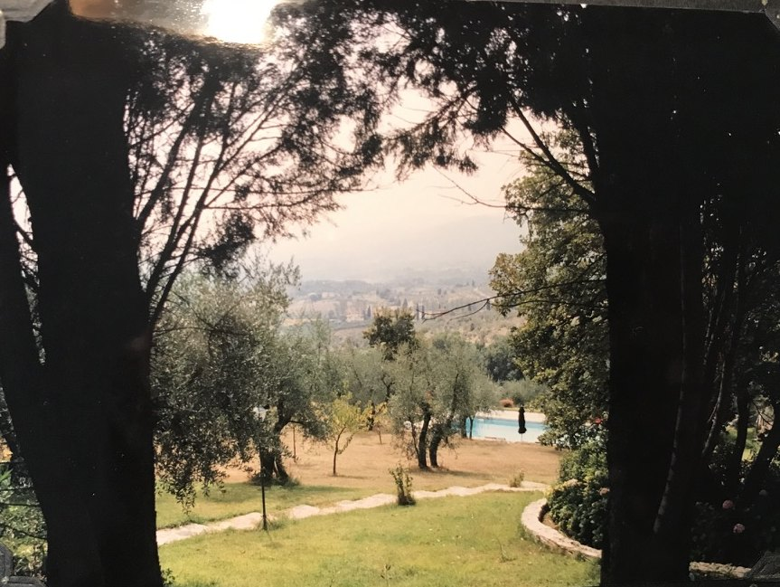
The lawn, the olives, the pool
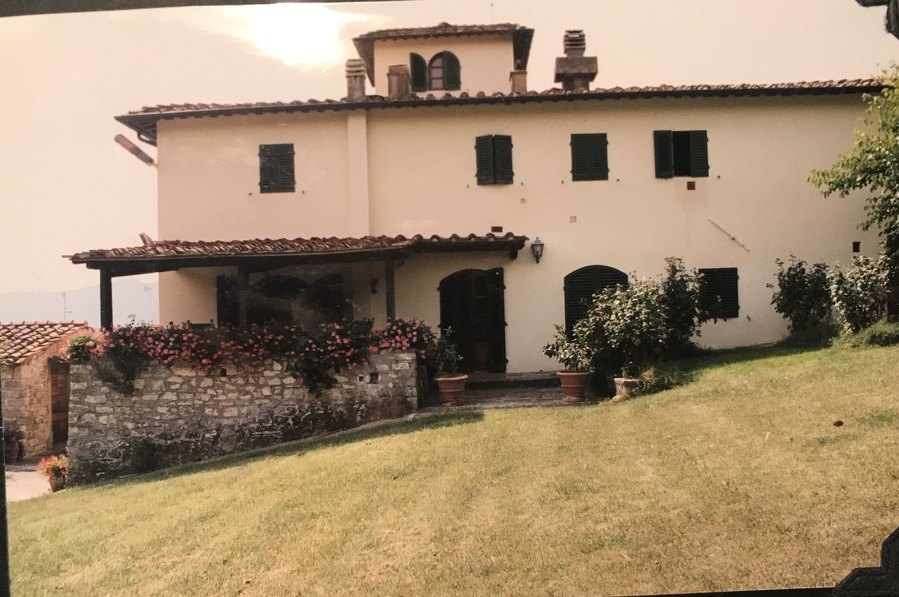
The house from the lawn
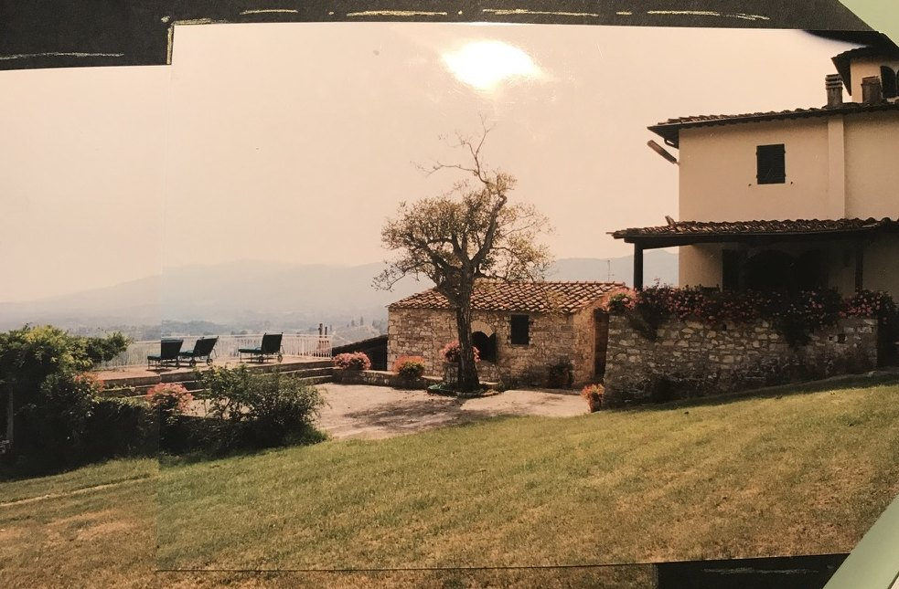
The stone wing, and the valley
La storia
Layers of a house that began as a tower.
The main structure dates to the sixteenth century and still carries an architecturally
distinctive colombaia—the dovecote tower that gives the estate its silhouette.
Outbuildings such as the cantina point to still earlier origins. The site is believed
to have begun as a medieval tower raised on Roman ruins, likely a military outpost,
before it was turned to farming.
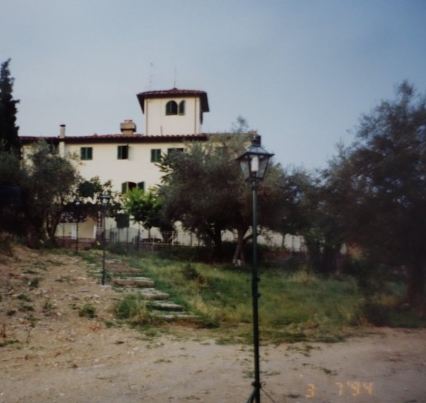
The house from the lower path, 1994
Roman
A ruin beneath the tower
The ground itself is older than the farmhouse. The first structure here is thought to have stood on Roman remains—an outpost before it was ever a home.
Medieval
Tower, then farmhouse
A medieval tower occupied the site, then slowly converted into a working agricultural house. The cantina still reads as earlier than the rooms above it.
1494
The southeast cornerstone
Near the property’s southeast end, a cornerstone is dated 1494—cut into the fabric of the place a century before the present main house took its form.
XVI century
House and colombaia
The principal building as it stands is sixteenth-century, marked by the dovecote tower. Doves were kept, watched, and used; the openings remain part of the architecture.
1700s
Frescoes in the bedrooms
Several bedrooms still hold original frescoes from the eighteenth century. The main dining room occupies what was once a barn—the agricultural plan still visible in the rooms people live in.
20th century
Shells, and a rifle
The land kept a quieter twentieth-century record. Family members have found numerous bullet shells on the property, and a rifle from the First World War.
Gli alloggi
Three houses, one estate.
The main house, a connected tower annex, and a separate guest house sleep as many
as nineteen. The guest house can be taken with the main house, or left quiet.
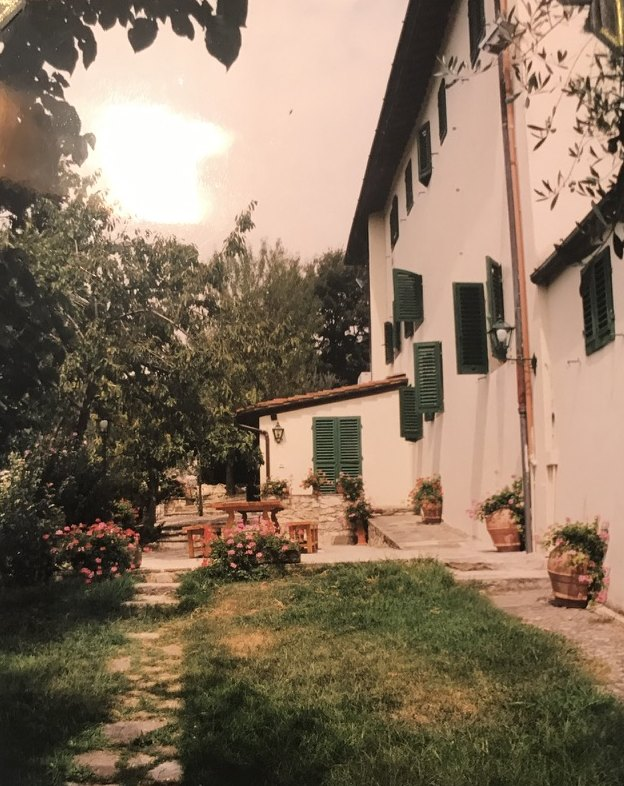
Along the house
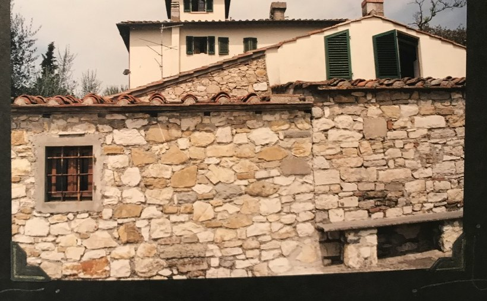
Stone, and the tower above it
01
Main House
Three floors · Sleeps 14
The principal house holds the shared life of the estate: spacious living rooms
and a dining room, each with a fireplace; a large game room with a billiard table
and its own fireplace; and a country kitchen with an eating area for twelve.
Bedrooms
7 doubles — 6 queens, 1 twin pair
Bathrooms
6 total · 3 ensuite · 3 with tubs
Gathering
Living rooms, dining room, game room, kitchen for 12
02
Tower Annex
One floor · Sleeps 2–3 · Connected to the main house
Reached from within the main house, the annex occupies the tower: a double bedroom
with a queen bed, a single walk-through bedroom, a sitting room, and a bathroom.
Bedrooms
1 queen · 1 single walk-through
Bathrooms
1
Also
Sitting room in the tower
03
Guest House
One floor · Sleeps 2 · Separate building
A self-contained house a short walk from the main building: one bedroom with two
single beds, a bathroom, a small hot-plate kitchen, a dining room, and a private
eating terrace. It can be rented alongside the main house.
Bedrooms
1 bedroom, two singles
Kitchen
Hot-plate kitchen and dining room
Outside
Private eating terrace
La tavola
The house is built around a table.
Inside, the dining room occupies what was once a barn. Outside, a long table
is set under the trees, and smaller ones against the courtyard wall.
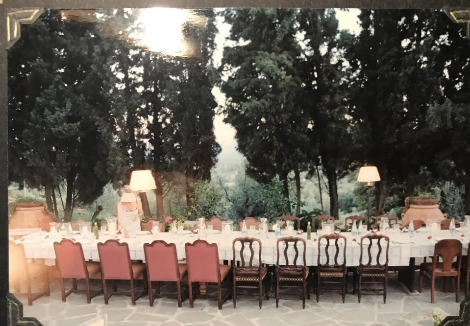
Under the trees
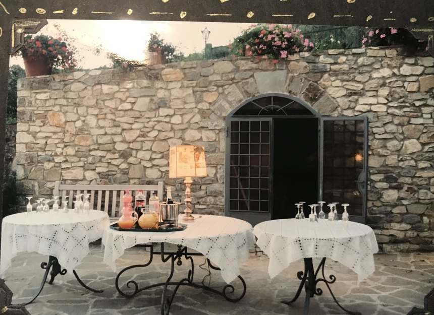
Against the courtyard wall
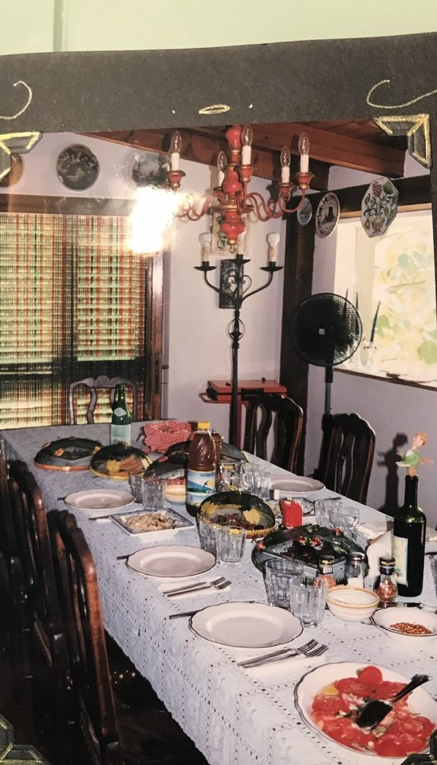
The dining room
Dall’album
From the family album.
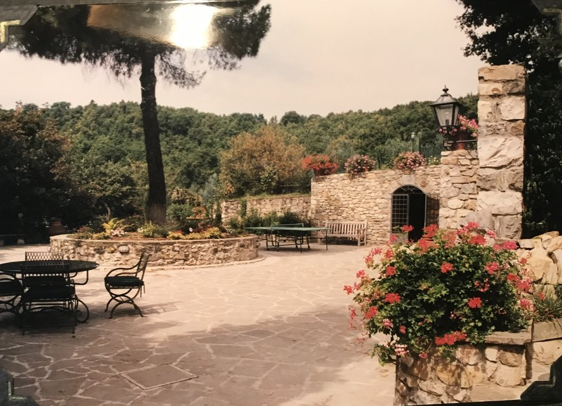
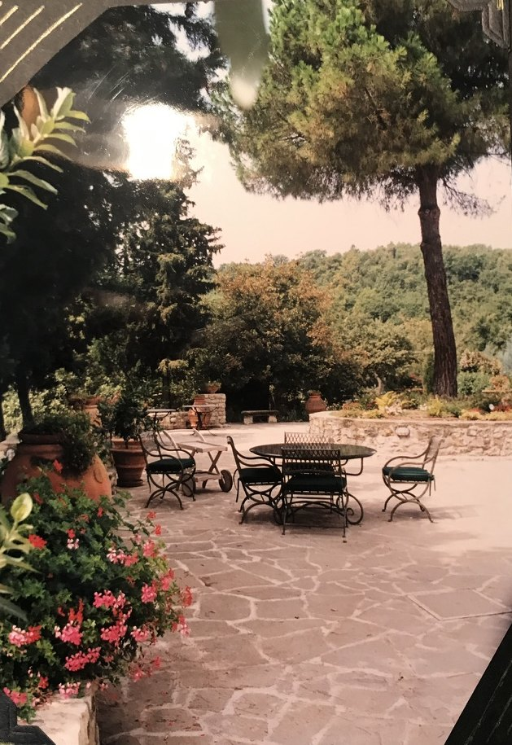
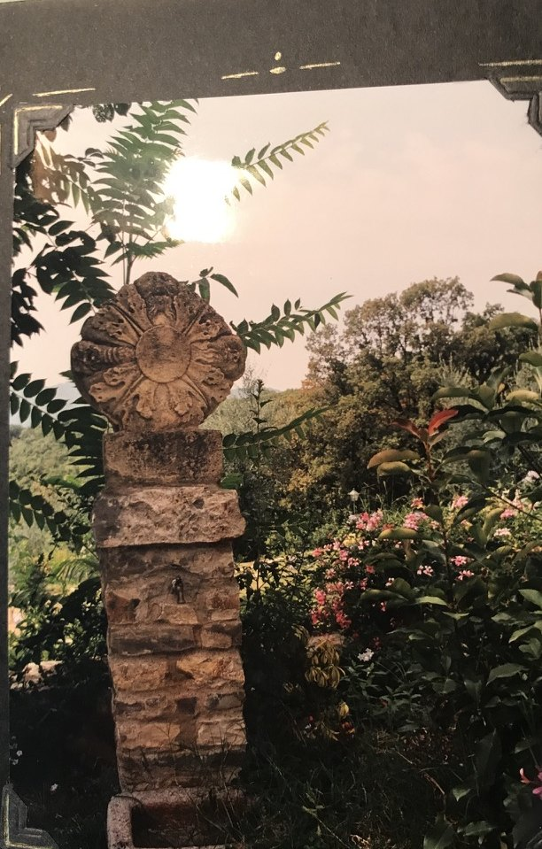
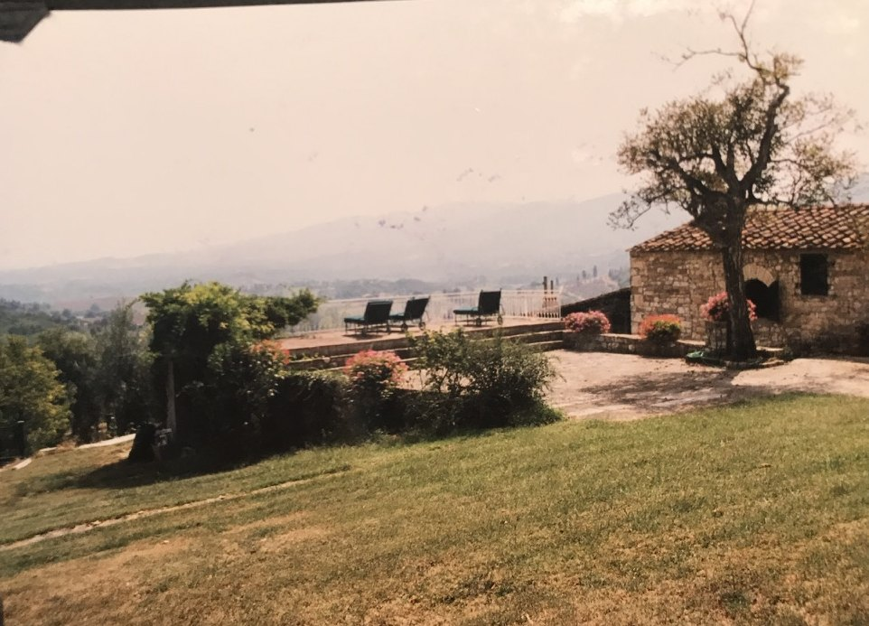
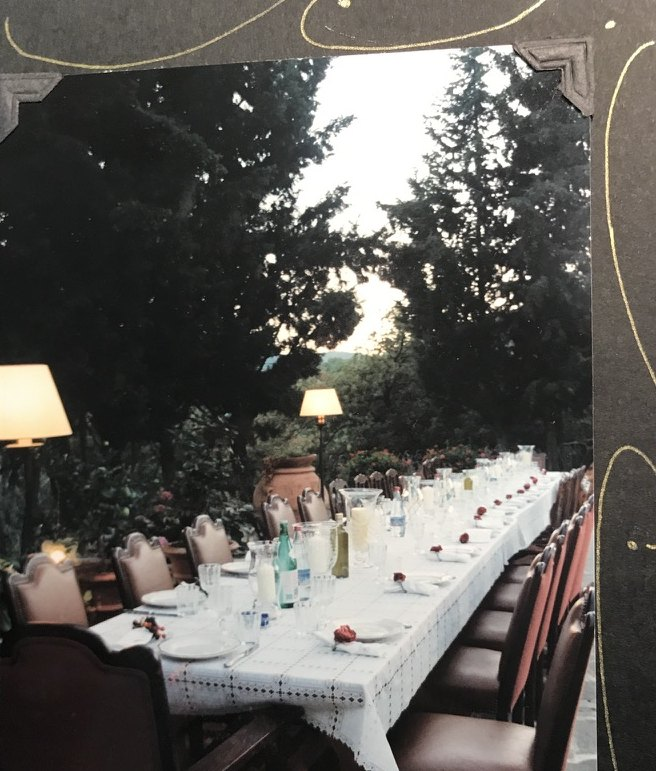
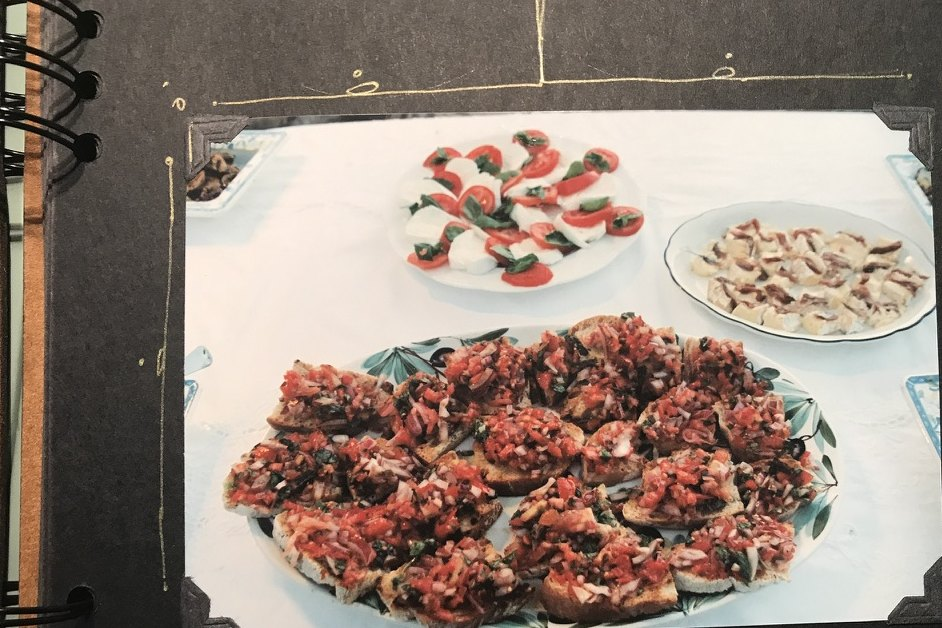
La posizione
Deliberately apart.
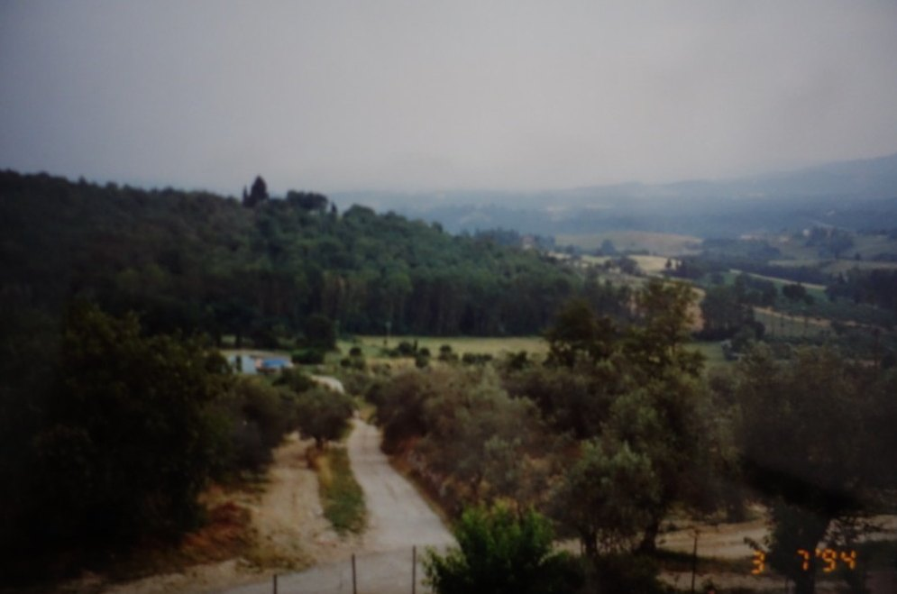
The road in, 1994
15 min
By car to town
The nearest town is a fifteen-minute drive. Close enough for a market morning; far enough that the estate keeps its quiet.
15 min
On foot to neighbors
The closest neighbors—art restorers of international reputation—are a fifteen-minute walk down an isolated trail.
Per soggiornare
Write to the house.
Rates and availability are given on request. Tell us when you would like to come,
how many will be staying, and whether you want the guest house as well.